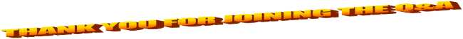
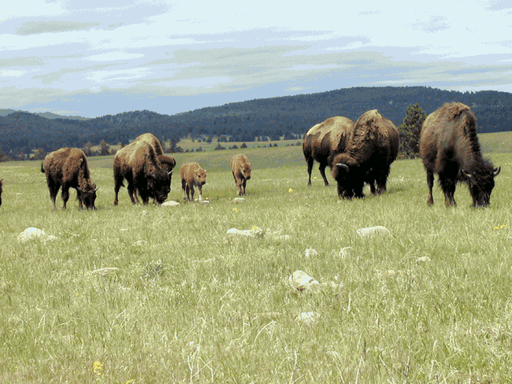

on aerie
nov 25, 2023
Welcome to the official™ Cat™ Comic™ Blog™! This is a project I've been mulling over for a while, and it's so so nice to finally pull some of it out of my brain and onto the world wide web! This is the first of hopefully many blog posts updating you on whatever I want to chat about as progress moves along on this silly big story.

Let's start off with a quick Q&A:

Now that you are completely and utterly familiarized with the world of Aerie, let us move briskly onward to the topic of today's blog post.
Aerie is a difficult setting to worldbuild for: worldbuilding, famously, is the art of filling a world with Stuff, and the sky, famously, is almost entirely empty space—there's not a lot of stuff up there in real life to copy over. However, Aerie offers two advantages in this regard: one, it is a magically irradiated planet (did I mention that?) and lets me play fast and loose with the gritty details in favor of aesthetics, and two, as it still follows the rules of natural selection at play in our own world, there are in fact certain inspirations I can take. Let us dive, like a bird of some sort, into the fascinating world of speculative biology.

The sky, as a biome, has two main characteristics. The first is that it is a large open space with little cover, so if you are caught out in the open you are extremely visible to any predators flying about—just like real-life grasslands! Grassland prey animals generally solve the "open space" problem in one of a few ways:
Predators, meanwhile, usually capitalize on the "open space" problem in the following ways:
Grass doesn't grow in the sky, but its role as an eyesight-blocker can be easily played by clouds. In the sky, then, prey tend to be herd animals and/or camouflage in clouds, and predators tend to be endurance or ambush predators.
The second characteristic is that the sky has no ground. This would present a considerable issue for many grassland scavengers: if an animal dies, gnawing at the corpse for extended periods of time is only possible if you're very good at keeping up with a rapidly falling sack of meat. The corpse eventually explodes on the surface below, of course, but at that point it's the property of whatever beautiful things live down there. No, if you're a carnivore living up in the sky, you want to swallow your prey whole—so sky critters inherit a lot from mostly-stomach animals like worms or snakes.
And viola:
![A brainstorming page of different animals. Mirages, long sun-bleached worms, are lone ambush predators that concentrate in higher-altitude ice clouds, luring their prey by creating mirages with the light reflected by ice crystals. Fogbirds are yellow vultures that lurk in dense clouds and wait for prey they can swarm. Arcusfish are large serpents that use a small zone of gravity to attract vapor around themselves, disguising themselves as arcus clouds. Also drawn are: a huge whale that uses long tendrils to pull prey into the mouth on its stomach, normal fish that can fly, and a long feathered poisonous serpent with a platypus-type beak.](assets/critters.png)
That's all for this post... if you have anything to say to me (please!) you can use the form linked below (please!!) and I'll respond in the next post! The next post which will be... hm... (calendar rustling) ah ha ha... well. As soon as...? At some point. Byebye for now!